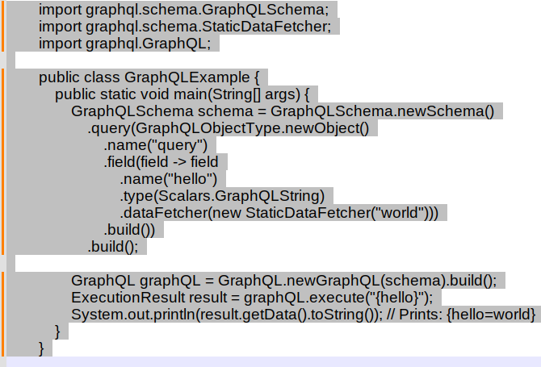

Aplicação Graphql Com Java

Aplicação GraphQL com Java
Aplicação de GraphQL com Java
Introdução
Nos últimos anos, a maneira como desenvolvemos e consumimos APIs tem evoluído significativamente. Uma das inovações mais notáveis nesse campo é o GraphQL * [vide rodapé], uma linguagem de consulta para APIs desenvolvida pelo Facebook (atual Meta). O GraphQL permite que os clientes solicitem exatamente os dados de que precisam, sem excesso ou falta de informações, o que é especialmente útil em aplicações Java, onde a eficiência e a precisão são cruciais.
Este artigo explora a implementação de GraphQL com Java, destacando os passos necessários para configurar um servidor GraphQL, definir esquemas, resolver consultas e integrar com bancos de dados. Além disso, discutiremos os benefícios de migrar de APIs baseadas em JSON para GraphQL, incluindo consultas mais precisas, redução de overfetching e underfetching, desempenho melhorado, e uma manutenção mais simplificada.
Resumidamente:
- GraphQL é uma linguagem de consulta para APIs desenvolvida pelo Facebook (atual Meta) que permite aos clientes solicitar exatamente os dados de que precisam, sem excesso ou falta de informações. Isso é especialmente útil em aplicações Java, onde a eficiência e a precisão são cruciais.
Implementação com Java
Para implementar GraphQL em Java, você pode usar bibliotecas como GraphQL Java.
Aqui estão os passos básicos:
Configuração do Servidor: Crie um servidor GraphQL usando frameworks como Spring Boot.
Definição do Schema: Defina o esquema (schema) GraphQL, que descreve os tipos de dados e as operações disponíveis.
Resolvendo Consultas: Implemente resolvers que processam as consultas e retornam os dados solicitados.
Integração com Banco de Dados: Conecte seu servidor GraphQL a um banco de dados para buscar e manipular dados conforme necessário.

Exemplo de código Java para utilização GraphQL
Por que Migrar do JSON para GraphQL?
A migração de APIs baseadas em JSON para GraphQL oferece várias vantagens significativas que podem melhorar a eficiência e a flexibilidade das aplicações.
Aqui estão alguns dos principais motivos para considerar essa mudança:
Consultas Precisas e Flexíveis: Diferente das APIs REST tradicionais que retornam dados em um formato fixo, GraphQL permite que os clientes especifiquem exatamente quais dados precisam. Isso elimina a necessidade de múltiplas chamadas à API para obter todas as informações necessárias, tornando as consultas mais eficientes.
Redução de Overfetching e Underfetching *[vide rodapé]: Com GraphQL, evita-se o problema de overfetching (receber dados demais) e underfetching (receber dados de menos), comuns em APIs REST. Isso significa que os clientes recebem exatamente os dados que solicitaram, sem excesso ou falta de informações.
Desempenho Melhorado: Ao retornar apenas os dados solicitados, GraphQL pode melhorar o desempenho das aplicações, reduzindo a quantidade de dados transferidos pela rede. Isso é especialmente benéfico para aplicações móveis ou com largura de banda limitada.
Evolução e Manutenção Simplificadas: Com GraphQL, é mais fácil evoluir e manter a API. Novos campos e tipos podem ser adicionados ao esquema sem impactar os clientes existentes, desde que as consultas antigas continuem válidas. Isso facilita a introdução de novas funcionalidades sem quebrar a compatibilidade com versões anteriores.
Ferramentas de Desenvolvimento Avançadas: GraphQL oferece um ecossistema robusto de ferramentas de desenvolvimento, como o GraphiQL *[vide rodapé], que permite explorar e testar a API de forma interativa. Isso acelera o desenvolvimento e a depuração, melhorando a produtividade dos desenvolvedores.
Conclusão
A adoção de GraphQL em aplicações Java representa um avanço significativo na forma como desenvolvemos e consumimos APIs. Com sua capacidade de permitir consultas precisas e flexíveis, GraphQL resolve problemas comuns das APIs REST, como o overfetching e underfetching, proporcionando uma experiência mais eficiente tanto para desenvolvedores quanto para usuários finais.
Além disso, a migração para GraphQL pode melhorar o desempenho das aplicações ao reduzir a quantidade de dados transferidos e simplificar a manutenção e evolução das APIs. As ferramentas avançadas de desenvolvimento disponíveis no ecossistema GraphQL, como o GraphiQL, também contribuem para um processo de desenvolvimento mais ágil e produtivo.
Em resumo, a implementação de GraphQL com Java não só otimiza a comunicação entre cliente e servidor, mas também prepara as aplicações para um futuro mais dinâmico e adaptável às necessidades dos usuários. Ao considerar esses benefícios, fica claro que a migração de APIs baseadas em JSON para GraphQL é uma escolha estratégica para desenvolvedores que buscam eficiência, flexibilidade e inovação.
Notas:
-
GraphQL é uma linguagem de consulta para APIs desenvolvida pelo Facebook (atual Meta) que permite aos clientes solicitarem exatamente os dados de que precisam, sem excesso ou falta de informações. Diferente das APIs REST tradicionais, onde os endpoints retornam dados em um formato fixo, GraphQL oferece uma flexibilidade maior ao permitir que os clientes definam a estrutura da resposta. Isso resulta em consultas mais eficientes, reduzindo a quantidade de dados transferidos e melhorando o desempenho das aplicações.
-
Overfetching e underfetching são problemas comuns em APIs REST. Overfetching ocorre quando uma API retorna mais dados do que o necessário para uma determinada solicitação, resultando em desperdício de largura de banda e processamento. Underfetching, por outro lado, acontece quando a API não fornece todos os dados necessários em uma única solicitação, obrigando o cliente a fazer múltiplas chamadas à API para obter todas as informações desejadas. Ambos os problemas podem ser mitigados com o uso de GraphQL, que permite consultas mais precisas e eficientes.
-
JSON (JavaScript Object Notation) é um formato leve de intercâmbio de dados que é fácil para humanos lerem e escreverem, e fácil para máquinas interpretarem e gerarem. Em APIs REST (Representational State Transfer), JSON é amplamente utilizado para transmitir dados entre o cliente e o servidor devido à sua simplicidade e eficiência. As APIs REST utilizam métodos HTTP padrão (como GET, POST, PUT e DELETE) para realizar operações CRUD (Create, Read, Update, Delete) e retornam dados no formato JSON, permitindo uma comunicação clara e estruturada entre diferentes sistemas.
-
GraphiQL é uma ferramenta de desenvolvimento interativa e baseada na web para trabalhar com APIs GraphQL. Ela permite que os desenvolvedores explorem a estrutura de uma API GraphQL, façam consultas, mutações e assinaturas em tempo real, e visualizem os resultados de maneira intuitiva. Como uma IDE (Integrated Development Environment) específica para GraphQL, GraphiQL facilita a criação e depuração de consultas, tornando o processo de desenvolvimento mais eficiente e produtivo